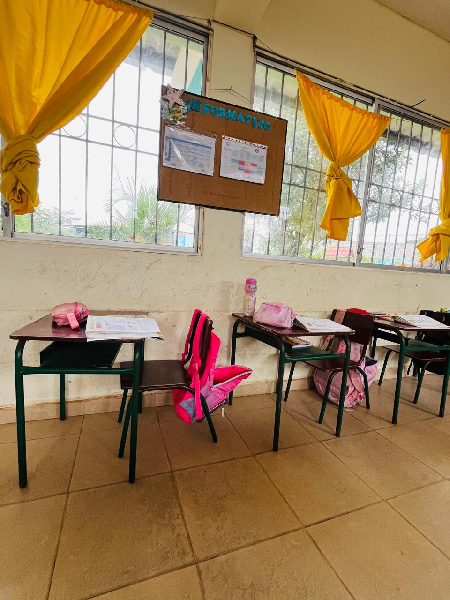

Educación General Básica Media
Profundización del conocimiento y desarrollo del pensamiento crítico y la investigación.
Preparación para el Nivel Superior
Este nivel se enfoca en la resolución de problemas, el razonamiento avanzado y la exploración de áreas de interés. Preparamos a los estudiantes para los desafíos académicos futuros.
Grados que Ofrecemos:
- Quinto Grado (9 años) - Introducción a la pre-álgebra y proyectos de investigación.
- Sexto Grado (10 años) - Consolidación de habilidades científicas y sociales.
- Séptimo Grado (11 años) - Liderazgo, graduación y preparación para el bachillerato.

Enfoque Curricular Ampliado
Informática y TICs
Educación Cultural y Artística
Desarrollo Humano Integral
Idioma Extranjero (Inglés)
¡Da el Próximo Paso en la Educación!
Contáctanos para conocer el currículo completo de Básica Media y el proceso de admisión.
Ver Contactos